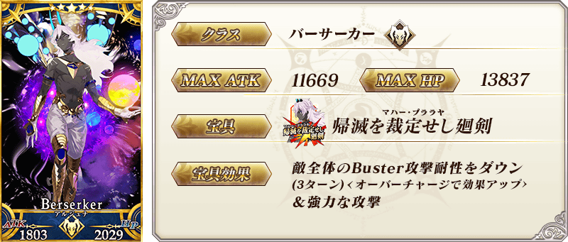
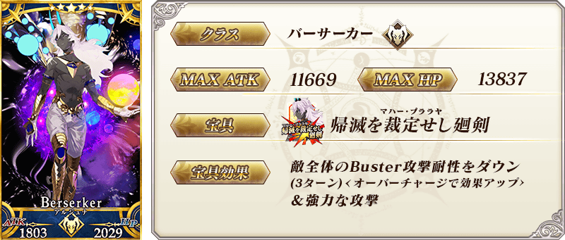
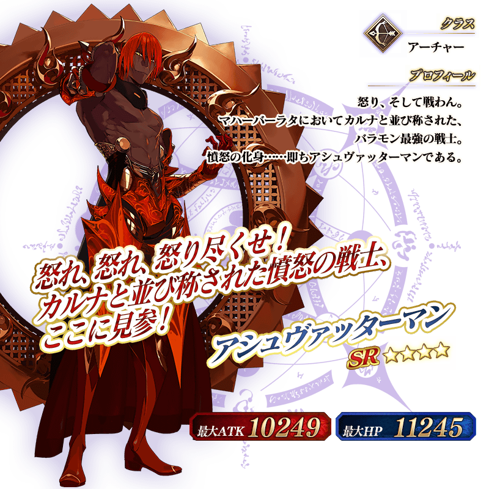
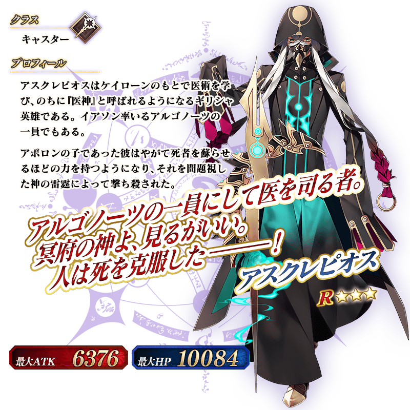
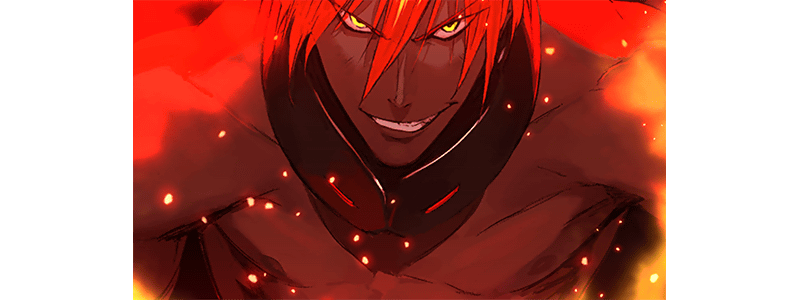
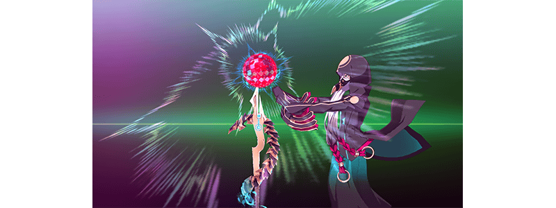
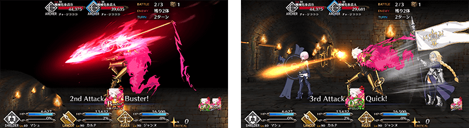

◆「宇迦淨土Pick Up2召喚(每日交替)」期間◆
期間:2019年6月22日(六) 17:00～7月6日(六) 11:59
舉辦期間限定「宇迦淨土Pick Up2召喚(每日交替)」！ ※未通過第2部 第4章「Lostbelt No.4 創世滅亡輪廻 宇迦淨土 黑色最終之神」的狀態也能進行「宇迦淨土Pick Up2召喚(每日交替)」。
自第2部 第4章「Lostbelt No.4 創世滅亡輪廻 宇迦淨土 黑色最終之神」，「★5(SSR)阿周那〔Alter〕」以期間限定登場！
並且「★4(SR)馬嘶」「★3(R)阿斯克勒庇俄斯」也新登場！
本次包含上述Pick Up4位從者！
「★5(SSR)阿周那〔Alter〕」與進行動作翻新的「★5(SSR)迦爾納」以每日交替Pick Up！
「★4(SR)馬嘶」「★3(R)阿斯克勒庇俄斯」常駐Pick Up。
詳情請在聖晶石召喚畫面左下的召喚詳細確認。
◆有關從者的注意◆
※「★5(SSR)阿周那〔Alter〕」在Pick Up期間結束後不會追加到故事召喚。
※請注意「宇迦淨土Pick Up2召喚(每日交替)」做為每日交替，「★5(SSR)阿周那〔Alter〕」就算Pick Up期間中也會有不被抽出的日子。
※「★4(SR)馬嘶」「★3(R)阿斯克勒庇俄斯」是自2019年6月22日(六) 17:00，在L通過ostbelt No.4後追加到故事召喚的從者。
※Pick Up期間中，「★4(SR)馬嘶」「★3(R)阿斯克勒庇俄斯」就算通過各章前也能入手。
※「★5(SSR)迦爾納」「★4(SR)馬嘶」「★3(R)阿斯克勒庇俄斯」在Pick Up期間結束後仍會在故事召喚被抽出。
Pick Up期間中，期間限定從者、新登場從者、Pick Up從者的出現機率提升！
10次召喚中確定1張★4(SR)以上和確定1位★3(R)以上的從者！ ※確定★4(SR)以上包含從者和概念禮裝。 ※本頁面皆為開發中圖片。會有與實際圖片相異的情況。
◆「宇迦淨土Pick Up2召喚(每日交替)」Pick Up內容◆
| Pick Up期間 | Pick Up內容 | |
|---|---|---|
| 每日交替Pick Up | 全天Pick Up | |
| 6/22(六) 17:00～ 6/24(一) 22:59 |
★5 阿周那〔Alter〕 | ★4 馬嘶 ★3 阿斯克勒庇俄斯 |
| 6/24(一) 23:00～ 6/27(四) 22:59 |
★5 迦爾納 ★5 阿周那〔Alter〕 |
★4 馬嘶 ★3 阿斯克勒庇俄斯 |
| 6/27(四) 23:00～ 6/30(日) 22:59 |
★5 迦爾納 | ★4 馬嘶 ★3 阿斯克勒庇俄斯 |
| 6/30(日) 23:00～ 7/2(二) 22:59 |
★5 阿周那〔Alter〕 | ★4 馬嘶 ★3 阿斯克勒庇俄斯 |
| 7/2(二) 23:00～ 7/4(四) 22:59 |
★5 迦爾納 | ★4 馬嘶 ★3 阿斯克勒庇俄斯 |
| 7/4(四)23:00～ 7/6(六) 11:59 |
★5 阿周那〔Alter〕 | ★4 馬嘶 ★3 阿斯克勒庇俄斯 |
※請注意會以每日交替變更Pick Up的從者。
 



 ※上述「★5(SSR)迦爾納」的卡面為靈基再臨第2階段。
※上述「★5(SSR)迦爾納」的卡面為靈基再臨第2階段。

 ※上述「★5(SSR)迦爾納」的立繪為靈基再臨第2階段。
※上述「★5(SSR)迦爾納」的立繪為靈基再臨第2階段。


介紹「★5(SSR)阿周那〔Alter〕」的寶具演出！
在「Fate/Grand Order」官方網站內的公告中，以影片公開寶具演出，敬請確認。

介紹「★4(SR)馬嘶」「★3(R)阿斯克勒庇俄斯」的寶具演出！
在「Fate/Grand Order」官方網站內的公告中，以影片公開寶具演出，敬請確認。


「★5(SSR)迦爾納」的戰鬥動作及寶具演出翻新！
在「Fate/Grand Order」官方網站內的公告中，以影片公開寶具演出，敬請確認。
◆翻新時間◆
2019年6月15日(六) 21:00～


其他還有，關於主線關卡第2部 第4章「Lostbelt No.4 創世滅亡輪廻 宇迦淨土 黑色最終之神」和期間限定「宇迦淨土Pick Up召喚」的詳情，請自下述橫幅確認。
■「Lostbelt No.4 創世滅亡輪廻 宇迦淨土 黑色最終之神」詳細情報

■「宇迦淨土Pick Up召喚」詳細情報